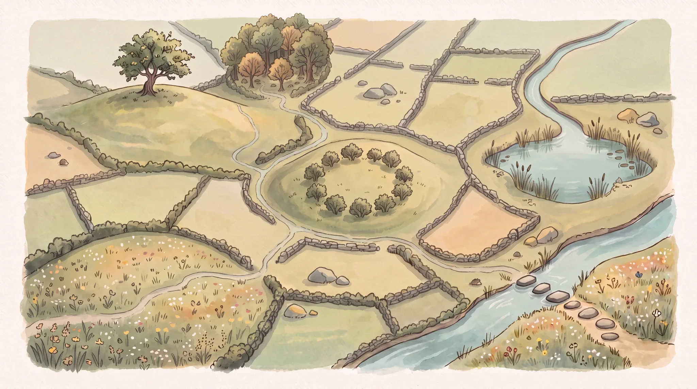
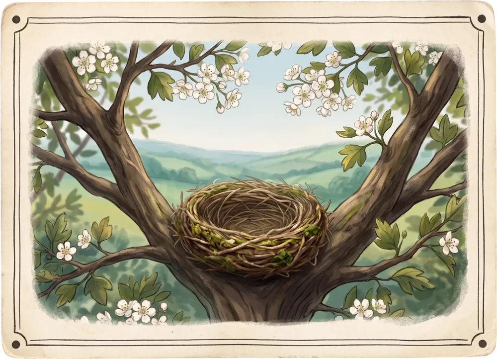
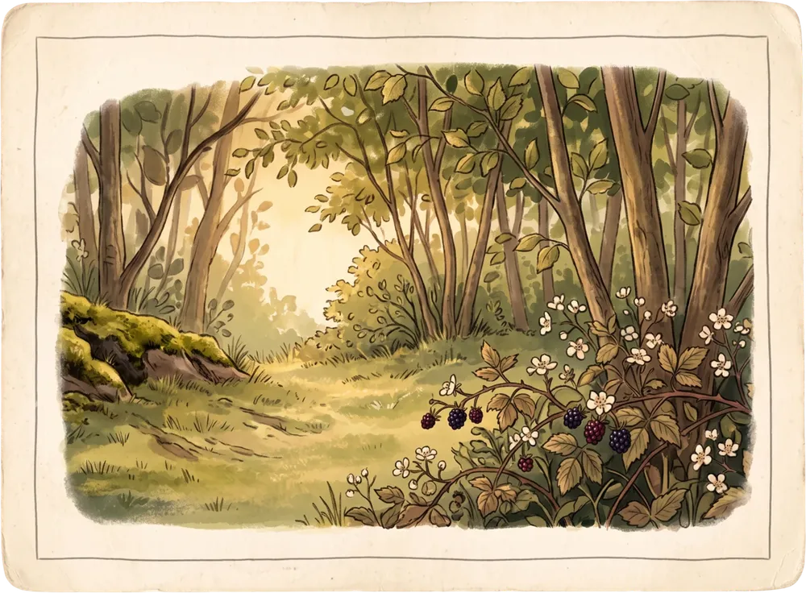
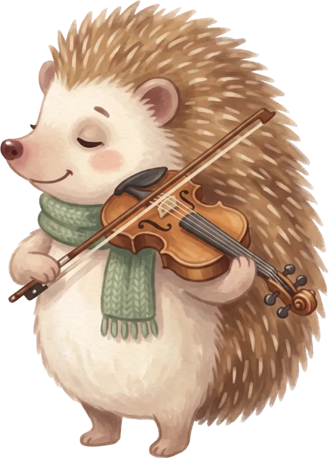
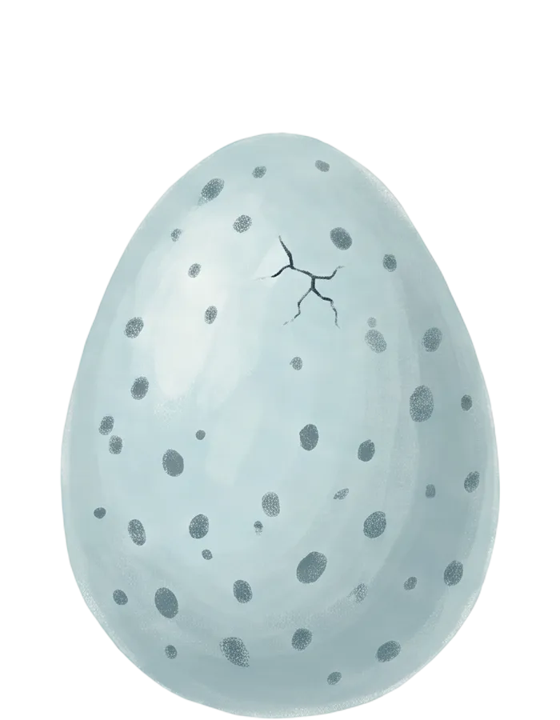
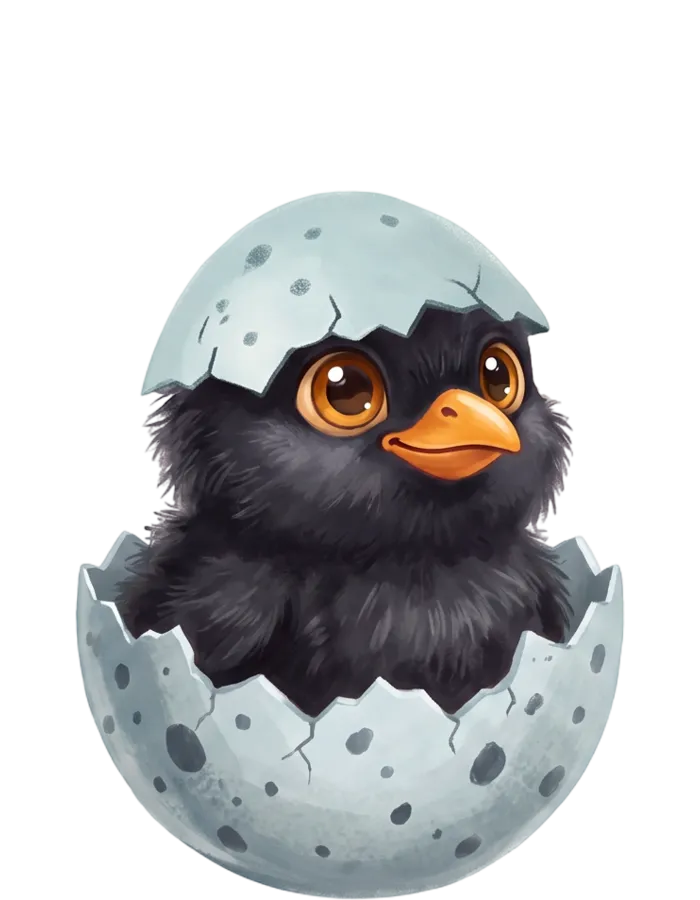
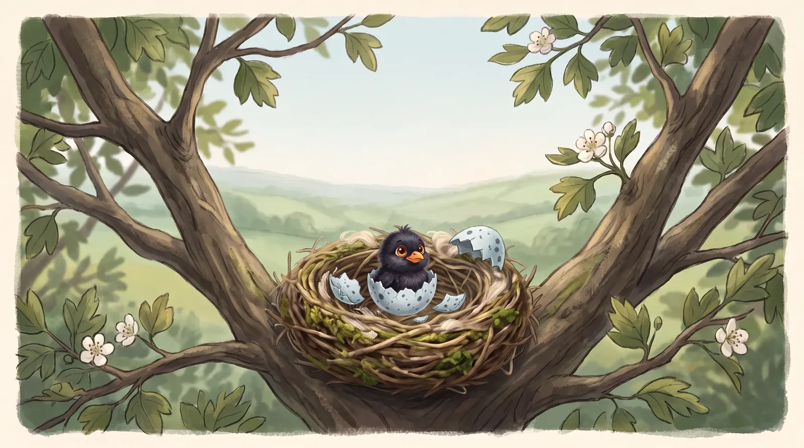
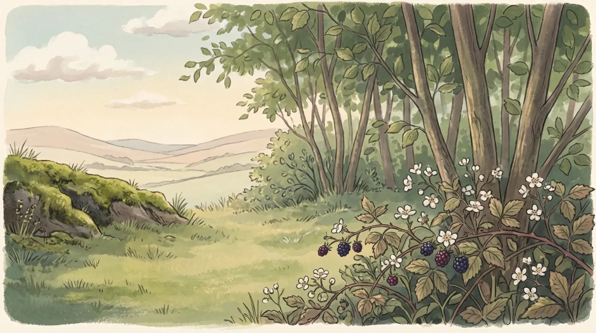

Practice happens between lessons. So does the nagging.
It started with an Instagram carousel claiming a handful of "emotional" app categories quietly make a fortune. I checked the numbers. Most didn't hold up, and the ones that did were risky to build. One idea on the shortlist kept pulling at me because I live it: my two kids learn piano, and the week between lessons is where good intentions go quiet.
Most practice apps reach for the same tools: streaks, points, a cartoon that looks sad when you skip a day. That can work on an adult chasing a habit. For a seven-year-old it turns music into a chore with a scoreboard, and there's a long line of research suggesting that paying children in rewards can crowd out the wanting to play. I wanted the opposite: something warm that notices when they play and asks nothing when they don't.
Your child plays. Their blackbird listens, grows a little, and every so often goes exploring. Missed days never set it back.
- Late Oct
The shortlist
A viral list of app ideas, checked. I picked the one I live with.
- Early Nov
lonan.ie
A landing page that asks for a €10 refundable deposit, not just an email.
- Nov
The demo
A playable slice of the glen, built for interviews.
- Nov
The film
32 seconds, seven shots, narrated by my daughter.
- Mid Nov
First school
Coffee with a local music school director. The conversations start.
Rules before pixels
Before drawing anything I wrote down what Lonán would never do. Every later decision was checked against that list, and it settled more arguments than any mockup did.
Never sad
Lonán is calm, curious, content. He never sulks, shrinks or looks let down about a missed day.
Weeks, not streaks
A gentle weekly goal instead of a daily chain to break. A busy Tuesday shouldn't cost a child anything.
Surprises, not wages
Postcards and new places turn up after practice as little surprises, never as a price to pay for them.
- It will never
- Show ads
- Sell anything to your child
- Sulk about a missed day
- Record your child
The third rule was the hardest to keep. Every game design instinct says make the reward visible so people work towards it. Here it had to feel like a gift, which meant designing for surprise and leaving out the things that count: no timers, no scores, no currency, no red dots.
A valley to grow into: Gleann an Cheoil
Lonán is an Irish name meaning little blackbird. His home is Gleann an Cheoil, the Glen of Music, a painted valley with six places to find. Places he hasn't reached sit under soft mist rather than behind padlocks. Practise, and the mist lifts.

The neighbours are native Irish animals and every one of them plays something. Fiadh the hedgehog has a fiddle, Old Corr the heron a low whistle, Rua the fox a drum. Each visit sends a postcard home, and a new tune.
The look is soft gouache and fine sepia ink on warm paper, in sage, ochre and pale teal. The picture books I grew up with set the tone, and I kept it to tone: nothing copies a named illustrator or series. Every image on this page is AI generated from a small set of style references, so the bird looks like himself from one picture to the next. It's placeholder art for testing. If Lonán goes ahead, an Irish illustrator and musician make the real thing.



Thirty-two seconds to explain a feeling
In an interview I have a minute, maybe two, before a parent or a teacher decides whether this is for them. A child has less. Screens explain features. A film can explain a feeling. So the demo opens with one: an egg in a hawthorn, a hatching, a flight over the glen, the neighbours, and the mist lifting off the fairy fort.
I didn't try to generate one long take. It's seven short shots, each animated from a still painted in the same style, which is what keeps the blackbird consistent. Mist does the transitions, because mist lifting is the whole premise. And the last frame is the exact map from the demo, so when the film ends the glen is simply there, waiting to be tapped.
In a quiet corner of Ireland, in a glen full of music, a little blackbird hatches.
His name is Lonán, and he's learning to sing.
Every time you practise, his world grows a little.
New friends.
New places.
And where the mist lies thick, your music lifts it.
Welcome to Gleann an Cheoil. The Glen of Music.
Tap any shot to play the film from there.
I recorded the narration. So did my daughter. Hers won by a distance: a child telling a child's story lands in a way mine never could. Children don't read in clean takes, so I transcribed every take word by word with Whisper and cut the best read of each line together. Under it sits a slow Irish folk piece in a Dorian mode, harp, low whistle and fiddle, swelling just as the title lands on the map.
There are two cuts. Landscape for iPad and desktop, and a native 9:16 portrait for phones with every shot reframed rather than letterboxed. The demo picks the cut by how you're holding the device. This page does too.
A slice of the glen you can actually tap
demo.lonan.ie is a small, deliberately throwaway web demo made for interviews. It runs in Safari on an iPad, which is where I hand it to people. It isn't the app. It's just enough of the feeling to react to.

Tap the egg and it wobbles and hums a few notes. Play, and it cracks.

A storybook keyboard asks what you'll call him. Lonán is only a suggestion.

Back on the map, he sits by the old tree and blinks at you.

At Hazel Wood the hedgehog plays her tune. Tap the blackbird once per note to sing it back.
She gives him a postcard. It drops into his satchel, and there are more hidden in the paintings.
Tap a place he hasn't reached and the mist shimmers. "Keep practising and the mist will lift." Nothing else.
Nothing listens for practice yet, so three taps on the title tell the glen the child practised three times this week. A week of progress, in two seconds, while I watch the face of whoever is holding the iPad.
Everything eases and nothing snaps. No HUD, no numbers, no badges. It should feel like turning a page in a picture book, and the music crossfades between places so it does.
Asking for €10 before writing the app
lonan.ie is written as a letter. The front is from the egg to the child. The back, like a postcard, is an honest note to the grown-up. And it asks for something real: families can reserve a founding spot with a €10 deposit, refundable any time before launch, or just join a free waitlist. An email address costs nothing to give. A deposit tells me someone means it.
I'm curled up in my egg, waiting. I can't see you yet, but I can hear you. Will you play me something? Then I can come out and say hello.
Love, a blackbird
(you'll get to choose my name)
- Show ads
- Sell anything to your child
- Sulk about a missed day
- Record your child
Alongside the page I'm talking to music schools and teachers around north Dublin, before deciding what to build, or whether to build it at all. The first reply, from the director of a school near me, was the most useful thing anyone has said about Lonán so far. His own kids barely practise from one week to the next, and he liked the blackbird. Then the worry: parents might not want another screen near the one thing that should be the opposite of TV and games.
Not "will children like the blackbird?" but "will parents let a screen anywhere near practice?"
If parents feel the same, that shapes the whole product: how long the app is open, whether it listens at all, whether the phone is even in the room while they play. It's now the first question in every conversation.
The non-obvious calls
A film before features
The cheapest way to test a feeling is to show it. Thirty-two seconds tells a parent more than a feature list, and it costs nothing to throw away.
A child's voice
My read was cleaner. Hers was right. The audience is seven, and the story should sound like someone their size is telling it.
Mist, not padlocks
A padlock says you're not allowed. Mist says not yet, and lifting it becomes the reward without anyone keeping score.
A deposit, not just a waitlist
Free sign-ups flatter an idea. Ten euro, refundable, is a small and honest test of whether a parent means it.
The cheapest thing to change is the thing you haven't built
With Sonarchy I designed screens first and paid for it. Lonán goes the other way: rules, then the world, then a film and a demo, all made to be thrown away. Building with AI makes that kind of prototype fast enough that I can put a feeling in front of real people before deciding what the product is.
It also makes it easy to fall for your own demo. The pictures are lovely and the film made my daughter proud. Neither tells me whether a parent will let it near practice. That's what the coffees are for.
Write the nevers first
The list of things it would never do settled more design calls than any screen.
Show, then ask
People react to a film or a tap. Hand them a description and they speculate.
Say it's a placeholder
Every image here is AI. The site, the demo and this page all say so, plainly.
More conversations
Teachers and parents across north Dublin, with the screen question first.
Decide, honestly
Build it, change it, or stop. The deposits and the conversations get the vote.
Real artists
If it goes ahead, an Irish illustrator and musician paint and score the glen for real.